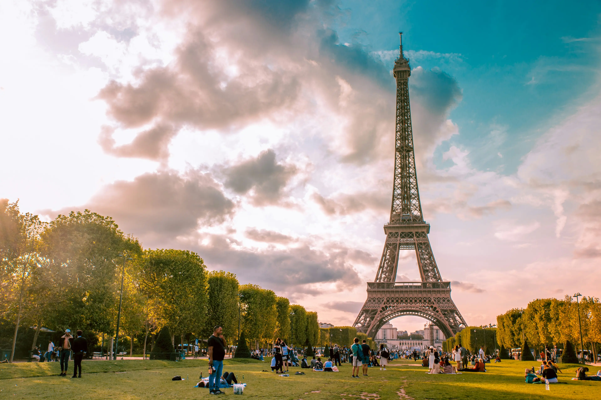

Paris é o destino dos sonhos de muitos viajantes. Conhecida como a “Cidade Luz”, encanta com sua atmosfera romântica, arquitetura impressionante e rica cena cultural. Passear pelas margens do Rio Sena, visitar monumentos como a Torre Eiffel e a Catedral de Notre-Dame, explorar o Louvre e provar a gastronomia local são experiências imperdíveis. É um lugar onde a arte e a história se encontram a cada esquina.
Machu Picchu, Peru (América do Sul)
Machu Picchu é um dos destinos mais enigmáticos do mundo. Esta cidade inca, escondida entre as montanhas dos Andes peruanos, impressiona por sua engenharia, beleza natural e significado histórico. A jornada até lá, seja pela Trilha Inca ou de trem, é cheia de paisagens de tirar o fôlego. Visitar Machu Picchu é como voltar no tempo e mergulhar na cultura milenar dos povos andinos.